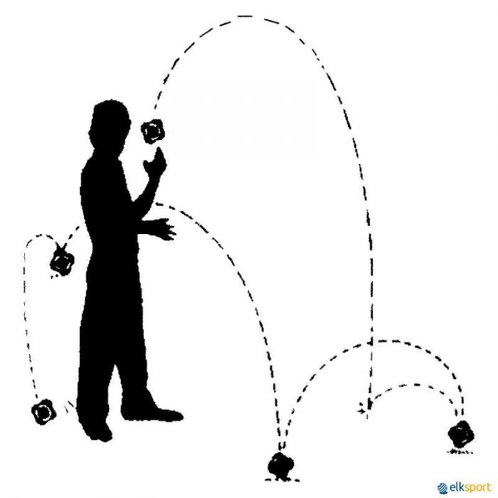

Características
La bola "Z", es una extraña pelota de caucho duro, con 6 gruesos salientes que le hacen rebotar en cualquier dirección, y puede incluso cambiar de dirección cada vez que toca el suelo. Existen dos tamaños, la más grande es más dócil y fácil de coger.
Terreno de Juego
Se juega en terreno liso, con posibilidad de buen bote. La dimensión depende del número de participantes.
Material
La bola "Z" pequeña es más conveniente para adultos y adolescentes teniendo un diámetro de 6 centímetros.
La bola "Z" grande es más adecuada para todas las edades, su dimensión es de 10 centímetros de diámetro
Modalidades
- Frontón
- Frontón Suelo
- Rebotón (Z 30)
- El Circulo "Z"
- B-O-L-A-"Z"
- Cooperando
Desarrollo del Juego y Reglas
En la Modalidad Frontón Suelo
- Se juega entre dos equipos y cada equipo puede estar formado pos 1, 2 ó 3 jugadores y/o jugadoras. Se necesita un terreno de juego de 5 por 10 metros. En el centro del terreno de juego se marca un cuadrado de 1 metro de lado y a 3 metros de distancia se sitúan las líneas de servicio según el gráfico adjunto.
- La pelota se pone en juego lanzando la bola detrás de la línea de servicio correspondiente a su equipo con intención que bote en el cuadro marcado en el suelo, si la bola no bota en el cuadrado sacaría el otro equipo.
- Una vez que se ha servido la bola el equipo contrario puede cruzar la línea de servicio.
- Si cogemos la bola inmediatamente después de botar en el cuadrado o después de haber dado otro bote, se continúa el juego devolviendo la bola al cuadro desde la línea de saque por el jugador o jugadora que cogió la bola.
- El saque lo debe realizar cada vez un jugador o jugadora por turnos.
- Puntuación:
- Se consigue un punto cuando el otro equipo coge la bola después de dar un bote cuando sale rebotada del cuadrado, el juego continúa.
- Se consigue dos puntos cuando el otro equipo coge la bola después de dar dos o más botes cuando sale la bola rebotada del cuadrado, el equipo infractor realiza el saque.
- El equipo que consiga 21 puntos gana un juego, podemos jugar al mejor de tres juegos.